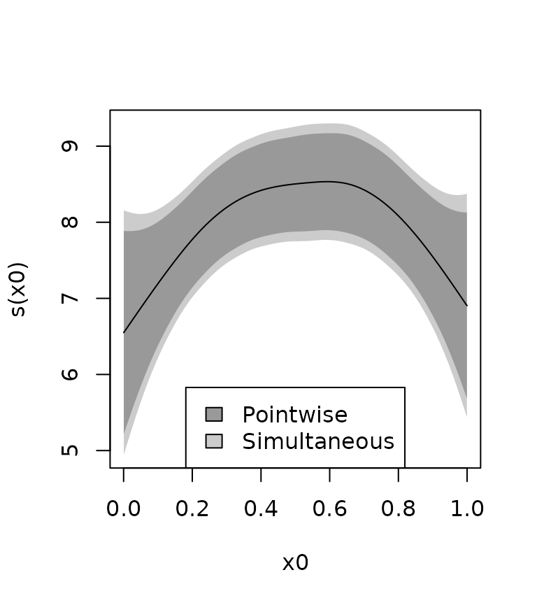
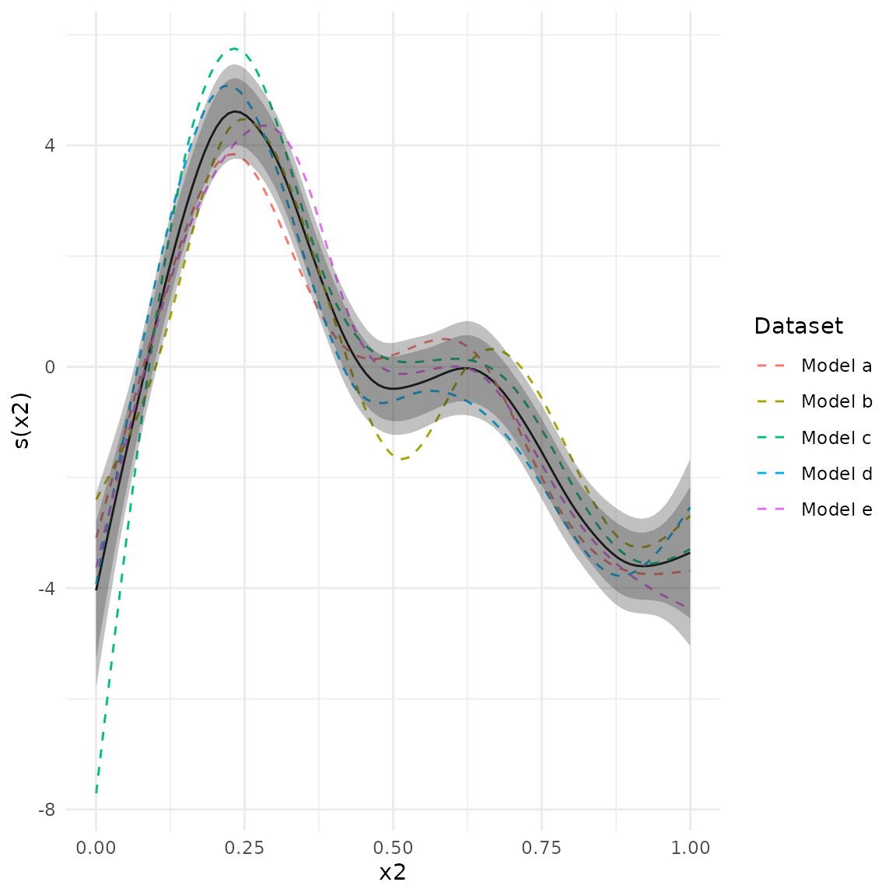

library("metagam")
library("mgcv")
#> Loading required package: nlme
#> This is mgcv 1.9-3. For overview type 'help("mgcv-package")'.
library("metafor")
#> Loading required package: Matrix
#> Loading required package: metadat
#> Loading required package: numDeriv
#>
#> Loading the 'metafor' package (version 4.8-0). For an
#> introduction to the package please type: help(metafor)Previous versions of metagam had built-in aggregation of p-values, using the metap package. However, this had two drawbacks:
- metap depends on multtest, which is a Bioconductor package, and this dependency made the installation of metagam unnecessarily complicated.
- Aggregation of p-values might not always make sense for smooth terms. (Thanks to Alexandre Loureiro for discovering this!)
This vignette briefly describes the latter issue, and shows how the metap package can be used directly on output from metagam.
What can go wrong when combining p-values?
Consider the two datasets below, which have completely opposite effects. I have also included the code for simulating the data.
Fitting a GAM to each dataset separately, we see that the effect is significant at level.
mod1 <- gam(y ~ s(x, bs = "cr"), data = dd$dat1)
summary(mod1)
#>
#> Family: gaussian
#> Link function: identity
#>
#> Formula:
#> y ~ s(x, bs = "cr")
#>
#> Parametric coefficients:
#> Estimate Std. Error t value Pr(>|t|)
#> (Intercept) 0.50554 0.06587 7.674 1.25e-11 ***
#> ---
#> Signif. codes: 0 '***' 0.001 '**' 0.01 '*' 0.05 '.' 0.1 ' ' 1
#>
#> Approximate significance of smooth terms:
#> edf Ref.df F p-value
#> s(x) 1 1 24.26 3.61e-06 ***
#> ---
#> Signif. codes: 0 '***' 0.001 '**' 0.01 '*' 0.05 '.' 0.1 ' ' 1
#>
#> R-sq.(adj) = 0.19 Deviance explained = 19.8%
#> GCV = 0.4428 Scale est. = 0.43394 n = 100
mod2 <- gam(y ~ s(x, bs = "cr"), data = dd$dat2)
summary(mod2)
#>
#> Family: gaussian
#> Link function: identity
#>
#> Formula:
#> y ~ s(x, bs = "cr")
#>
#> Parametric coefficients:
#> Estimate Std. Error t value Pr(>|t|)
#> (Intercept) -0.46800 0.07367 -6.352 6.72e-09 ***
#> ---
#> Signif. codes: 0 '***' 0.001 '**' 0.01 '*' 0.05 '.' 0.1 ' ' 1
#>
#> Approximate significance of smooth terms:
#> edf Ref.df F p-value
#> s(x) 1.237 1.436 10.65 0.00112 **
#> ---
#> Signif. codes: 0 '***' 0.001 '**' 0.01 '*' 0.05 '.' 0.1 ' ' 1
#>
#> R-sq.(adj) = 0.117 Deviance explained = 12.8%
#> GCV = 0.55517 Scale est. = 0.54275 n = 100Now let us try a metagam fit.
models <- list(strip_rawdata(mod1), strip_rawdata(mod2))
metafit <- metagam(models)Plotting the meta-analytic fit, we see that the 95 % confidence bands completely cover zero.
plot(metafit, ci = "pointwise", legend = FALSE)The object returned by metagam has a pvals
element which contains p-values for each term in each individual
fit.
metafit$pvals
#> [[1]]
#> edf Ref.df F p-value
#> s(x) 1 1 24.2593 3.612591e-06
#>
#> [[2]]
#> edf Ref.df F p-value
#> s(x) 1.236565 1.436059 10.64571 0.00112122Combining the p-values using any of the methods available in metap, we do however see that the effects are significant at .
library("metap")
allmetap(p = unlist(lapply(metafit$pvals, function(x) as.data.frame(x)[, "p-value"])),
method = "all")#> p valid eponym
#> logitp 5.618196e-07 2
#> maximump 1.257134e-06 2
#> meanp NA 2
#> meanz 6.758351e-08 2
#> minimump 7.225169e-06 2 Tippett
#> sumlog 8.232425e-08 2 Fisher
#> sump 6.32624e-07 2 Edgington
#> sumz 4.810753e-08 2 StoufferThis happens because combination of p-values is not aware of the direction of the effects. Hence, rather than having this a part of the package, we suggest that users who know what they’re doing combine the p-values using metap package.
For comparison, fitting a linear model to each dataset and combining
the slopes using metafor gives a p-value 0.9296, which
makes a lot more sense.
mod1 <- lm(y ~ x, data = dd$dat1)
mod2 <- lm(y ~ x, data = dd$dat2)
estimates <- c(coef(mod1)[["x"]], coef(mod2)[["x"]])
sampling_variances <- c(vcov(mod1)[["x", "x"]], vcov(mod2)[["x", "x"]])
rma(estimates, vi = sampling_variances)
#>
#> Random-Effects Model (k = 2; tau^2 estimator: REML)
#>
#> tau^2 (estimated amount of total heterogeneity): 2.4526 (SE = 3.5661)
#> tau (square root of estimated tau^2 value): 1.5661
#> I^2 (total heterogeneity / total variability): 97.26%
#> H^2 (total variability / sampling variability): 36.54
#>
#> Test for Heterogeneity:
#> Q(df = 1) = 36.5396, p-val < .0001
#>
#> Model Results:
#>
#> estimate se zval pval ci.lb ci.ub
#> 0.0992 1.1229 0.0884 0.9296 -2.1015 2.3000
#>
#> ---
#> Signif. codes: 0 '***' 0.001 '**' 0.01 '*' 0.05 '.' 0.1 ' ' 1A better way to compute p-values?
Simultaneous confidence intervals
Let’s create another GAM fit, this time using the gamSim
function. The dashed lines in the plot correspond to two standard errors
above and below the estimate. However, this is a pointwise confidence
interval, which for our practical purposes means that under repeated
sampling from the population, it will contain the true function less
than 95 % of the times. See, e.g., Chapter 6.5 of Ruppert, Wand, and Carroll (2003), Sørensen, Walhovd, and Fjell (2021) or this
blog post. What we need is a simultaneous confidence interval.
We see that the critical value for a 95 % simultaneous interval is
above 2. (Note that nsim is set relatively low to avoid the
vignette compilation taking too long. In a real application it should be
probably be higher.)
newdat <- with(dat, data.frame(x0 = seq(min(x0), max(x0), length = 200)))
masd <- getmasd(mod, newdat = newdat, nsim = 1000, term = "s(x0)")
(crit <- quantile(masd, prob = .95, type = 8))
#> 95%
#> 2.356271We can plot the two together, and we see that the simultaneous confidence interval is bigger.
fit <- predict(mod, newdata = newdat, se.fit = TRUE)
dat <- data.frame(
x0 = newdat$x0,
pred = fit$fit,
ci_pt_lb = fit$fit + qnorm(.025) * fit$se.fit,
ci_pt_ub = fit$fit + qnorm(.975) * fit$se.fit,
ci_sim_lb = fit$fit - crit * fit$se.fit,
ci_sim_ub = fit$fit + crit * fit$se.fit
)
plot(dat$x0, dat$pred, type = "l",
ylim = range(dat$ci_sim_lb, dat$ci_sim_ub),
xlab = "x0", ylab = "s(x0)")
polygon(
x = c(rev(dat$x0), dat$x0), y = c(rev(dat$ci_sim_ub), dat$ci_sim_lb),
col = "gray80", border = NA
)
polygon(
x = c(rev(dat$x0), dat$x0), y = c(rev(dat$ci_pt_ub), dat$ci_pt_lb),
col = "gray60", border = NA
)
lines(dat$x0, dat$pred)
legend(x = "bottom", legend = c("Pointwise", "Simultaneous"),
fill = c("gray60", "gray80"))
Combining simultaneous confidence intervals
In metagam, it is possible to combine simultaneous confidence intervals for each separate fit. The critical value multiplied by the standard errors is then used as the weight when it is meta analytically combined. Significance testing can be done by checking if it is possible to fit a constant function within the simultaneous confidence bands, which is the same as checking whether the maximum of the lower band across the range of x-values is larger than the minimum of the upper band across the range of x-values. We illustrate it here.
set.seed(124)
datasets <- lapply(1:5, function(x) gamSim(scale = 5, verbose = FALSE))
models <- lapply(datasets, function(dat){
model <- gam(y ~ s(x2, bs = "cr"), data = dat)
strip_rawdata(model)
})
names(models) <- paste("Model", letters[1:5])
meta_analysis <- metagam(models, terms = "s(x2)", grid_size = 100,
nsim = 10000, ci_alpha = .05)
plot(meta_analysis, ci = "both", legend = TRUE)
The p-value is printed with the model summary. In order to get more
digits after the decimal point in the p-value, increase the
nsim argument.
summary(meta_analysis)
#> Meta-analysis of GAMs from cohorts, using method FE.
#>
#> Smooth terms analyzed: s(x2).
#>
#> P-values for smooth terms:
#> s(x2): < 1e-04Does it work?
We shouldn’t trust a single example, so here we will show some simulations. We do this by simulating a case where the true relationship is zero, and check if the distribution of p-values is close to uniform?
library(parallel)
cl <- makeCluster(10)
pvals <- parLapply(
cl = cl, X = 1:100, fun = function(x){
models <- lapply(1:5, function(i){
dat <- data.frame(x = runif(100), y = rnorm(100))
mod <- mgcv::gam(y ~ s(x, bs = "cr"), data = dat)
metagam::strip_rawdata(mod)
})
fit <- metagam::metagam(models, nsim = 1000, ci_alpha = .05)
fit$simulation_results$`s(x)`$pval
}
)
stopCluster(cl)
plot(qunif(seq(from = 0, to = 1, length.out = 100)),
sort(as.numeric(unlist(pvals))),
xlab = "Theoretical quantile",
ylab = "Data quantile")
abline(0, 1)
The quantile plot above looks sufficiently satisfactory to include this in the package. We will conduct much more extensive simulation studies in a future paper.